| Previous | Table of Contents | Next |
We would like to find a linear function to estimate the CPU time:
CPU time = b0 + b1(number of disk I/O’s) + b2(memory size)
In this case,
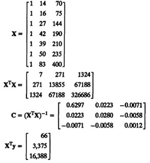
The regression parameters are:
b = (XTX)–1XTy = (–0.1614,0.1182,0.0265)T
The regression equation is
CPU time = – 0.1614 + 0.1182(number of disk I/O’s) + 0.0265(memory size)
Using this equation, we can estimate CPU time and compute the errors as shown in Table 15.2. From the table we see that
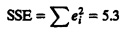
An alternate method to compute SSE is
SSE = {yTy – bTXTy}
For this data,
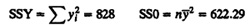
| TABLE 15.2 Error Computation for the Disk-Memory-CPU Data | |||||
|---|---|---|---|---|---|
| CPU Time, yi | Disk I/O’s, x1i | Memory Size, x2i | Estimated CPU time, 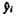 | Error, ei | Error Squared, e2i |
| 2 | 14 | 70 | 3.3490 | –1.3490 | 1.8198 |
| 5 | 16 | 75 | 3.718D | 1.2820 | 1.6436 |
| 7 | 27 | 144 | 6.8472 | 0.1528 | 0.0233 |
| 9 | 42 | 190 | 9.8400 | –0.8400 | 0.7053 |
| 10 | 39 | 210 | 10.0151 | –0.0151 | 0.0002 |
| 13 | 50 | 235 | 11.9783 | 1.0217 | 1.0439 |
| 20 | 83 | 400 | 20.2529 | –0.2529 | 0.0639 |
| 66 | 271 | 1324 | 66.0000 | –0.0003 | 5.3000 |
Therefore,
SST = SSY – SS0 = 828 – 622.29 = 205.71
SSR = SST – SSE = 205.71 – 5.3 = 200.41
The coefficient of determination is
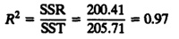
Thus, the regression explains 97% of the variation of y.
The coefficient of multiple correlation is defined as the square root of the coefficient of determination. For this example, it is given by
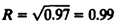
The standard deviation of errors is
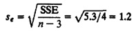
The standard deviations of the regression parameters are
Estimated standard deviation of b0 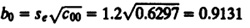
Estimated standard deviation of b1 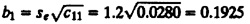
Estimated standard deviation of b2
The 0.95-quantile for a t-variate with four degrees of freedom is 2.132. The confidence intervals for the regression parameters are therefore
90% confidence interval of b0 = 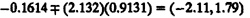
90% confidence interval of b1 = 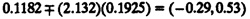
90% confidence interval of b2 = 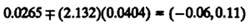
We see that none of the three parameters is significant at a 90% confidence level. In order to illustrate the applications of the prediction formula, let us predict a single future observation for programs with 100 disk Ws and a memory size of 550. The predicted mean y1p is given by
y1p = b0 +b1x1 + b2x2 = –0.1614 + 0.1182(100) + 0.0265(550) =26.2375
The standard deviation of the predicted observation is
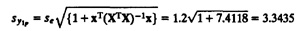
The 90% confidence interval using the t-value of 2.132 is
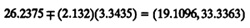
The standard deviation for a mean of a large number of observations is
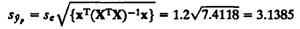
The 90% confidence interval is
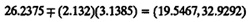
The partitioning of variation into an explained and unexplained part is useful in practice since it can be easily presented by the analyst to the decision makers. For example, it is easy for them to understand that a regression that explains only 709/6 of the variation is not as good as one that explains 90%. The next question is how much explained variation is good? A statistical answer to this question is obtained by the so-called Analysis of Variance (ANOVA). This analysis essentially tests the hypothesis that the SSR is less than or equal to the SSE.
Various sums of squares are related as follows:
SST = SSY – SS0 = SSR + SSE
Each of the sums of squares has an associated degree of freedom that corresponds to the number of independent values required to compute them. The SSY has n degrees of freedom since each of its n observations can be independently chosen. Ala SSE has only n – k – 1 degrees of freedom since it is obtained after calculating k + 1 regression parameters from the data. Similarly, the SST has n – 1 degrees of freedom since one parameter 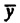 must be calculated from the data before the SST can be computed. The SSR, which is the difference between the SST and the SSE, has the remaining k degrees of freedom. Thus, various sums and their associated degrees of freedom are as follows:
SST = SSY – SS0 SSR + SSE
n – 1 = n – 1 k + (n – k – 1)
Notice that the degrees of freedom add in a manner similar to the sum of squares. This fact can be used to check if the degrees of freedoms have been assigned correctly.
Assuming that the errors are independent and normally distributed and that all of them are identically distributed (with the same mean and variance), it follows that the y’s are also normally distributed since the x’s are nonstochastic (they can be measured without errors). The sum of squares of normal variates has a chi-square distribution (see Section 29.4). Thus, various sums of squares have a chi-square distribution with the degrees of freedoms as given above.
Given two sums of squares SSi and SSj with vi and vj degrees of freedom, the ratio (SSi/vi)/(SSj/vj) has an F distribution with vi numerator degrees of freedom and vj denominator degrees of freedom. This follows from the definition of the F distribution as explained in Section 29.7 The hypothesis that the sum SSi is less than or equal to SSj is rejected at the α significance level if the ratio is greater than the 1 – α quantile of the F-variate. Thus, the computed ratio is compared with F[1–α;vi,vj] obtained from the table of F quantiles (Tables A.6 to A.8 in the Appendix) and the sums of squares are considered significantly different if the computed F is more than that obtained from the table. This procedure is also known as in F-test.
| Previous | Table of Contents | Next |